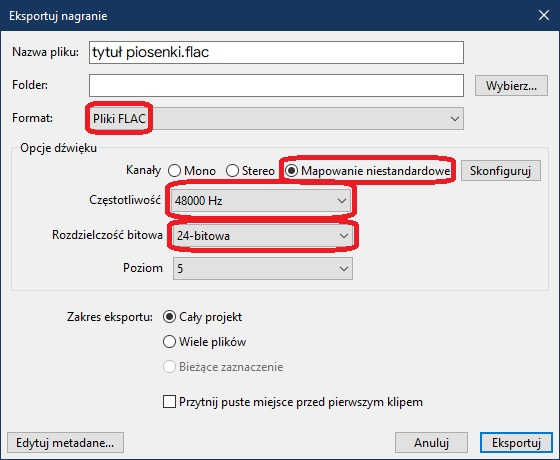
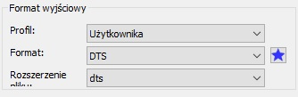

Poradniki - Jak zrobić remaster piosenki we FLACu do DTS 5.1?
Aby uzyskać piosenkę stworzoną dla formatu dźwięku 5.1, przygotuj najpierw utwór w formacie FLAC, który chcesz zremasterować. W międzyczasie zainstaluj 3 niezbędne programy:
Uruchom program UVR,
W programie ustaw sobie te opcje wskazane na obrazku:

WYJAŚNIENIE:
Rozpocznij konwersję
Uruchom program Audacity.
W programie ustaw ścieżki według wskazanej kolejności:
Sprawdź, czy masz tak samo jak ja:

Po ustawieniu ścieżek we wskazany sposób, wyeksportuj plik ze wskazanymi ustawieniami w poniższym obrazku:
Wyeksportuj nagranie.
W tym programie przekonwertuj stworzonego przez siebie FLACa do DTS lub WAV.
Ustaw format wyjściowy:
lub:

W obu przypadkach ustaw następujące wartości w zakładce Audio:

Dodaj do kolejki i przekonwertuj.